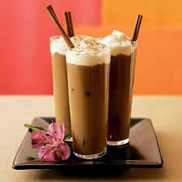

Coffee....!!!
Made Me Do It.....
NAME |
DRINK |
PREPARATION |
TEMPERATURE |
INGREDIENT0S |
Details
| Cappuccino |
Espresso |
Hot |
Equal amount of espresso and steamed milk |
Pour the espresso through the milk and serve |
| Latte |
Espresso |
Hot |
2/3 or more steamed milk and espresso |
Pour the espresso through the milk and serve. |
| Macchiato |
Espresso |
Hot |
Espresso with just a "mark" of steamed milk |
Add milk to the expresso after pressing. |
| Iced Coffee |
Drip or french press |
Cold |
Coffee poured over ice |
Can be sweetened with sugar or creme. |
| Frappé |
Strong instant coffee |
Cold |
Instant coffee, water and milk |
Shake to create a foam, then pour over ice and serve. A specialty in Greece |
| Flat white |
Espresso |
Hot |
1/3 espresso and 2/3 steamed milk |
A specialty in Australia and New Zealand. The foam is often decorated with a motif. |